Crear un monitor sencillo con Grafana en Ubuntu Sever
Vamos a monitorizar el sistema operativo Linux de nuestro servidor virtual desde un navegador en el host (Windows) y para eso usaremos:
Node Exporter: expone las métricas del sistema operativo Linux en un endpoint HTTP.
Prometheus: lee las métricas de Node Exporter y las almacena en una base de datos de series temporales.
Grafana: se conecta a Prometheus y permite crear dashboards para visualizar las métricas.
La práctica se realizará con Docker Compose, porque permite levantar varios servicios mediante un único fichero YAML. Docker Compose está pensado precisamente para definir y ejecutar aplicaciones formadas por varios contenedores desde un único archivo de configuración. (Docker Documentation)
Grafana dispone de instalación oficial mediante imágenes Docker y docker-compose; además, actualmente la imagen OSS recomendada es grafana/grafana. (Grafana Labs)
Escenario de la práctica
Vamos a simular una pequeña infraestructura empresarial. Tendremos un servidor Ubuntu que queremos monitorizar.
¿Cuánta CPU está consumiendo el servidor?
¿Cuánta memoria RAM queda disponible?
¿Cuánto espacio de disco se está utilizando?
¿Hay tráfico de red?
¿Podemos ver estos datos en un dashboard?
1 Creamos un servidor ubuntu con ip fija
La configuración de red será en adaptador puente.
Para evitar que se nos rompa el monitor, necesitaremos tener la misma ip siempre, para eso vamos a cambiar la configuración ip de automática asignada por DHCP a manual
Para introducir una dirección ip manual paramos en este punto de la instalación de ubuntu server en nuestra máquina virtual y seleccionamos para editar enp0s3
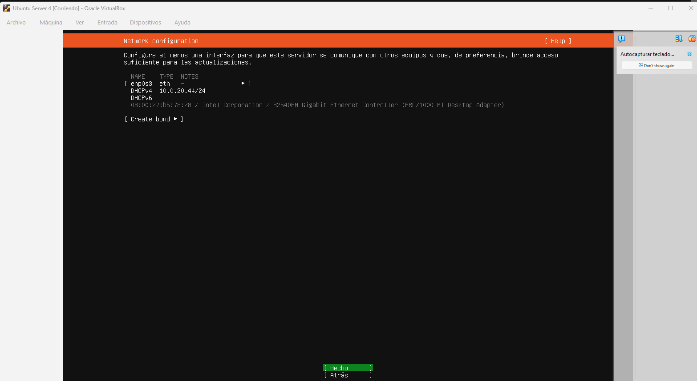
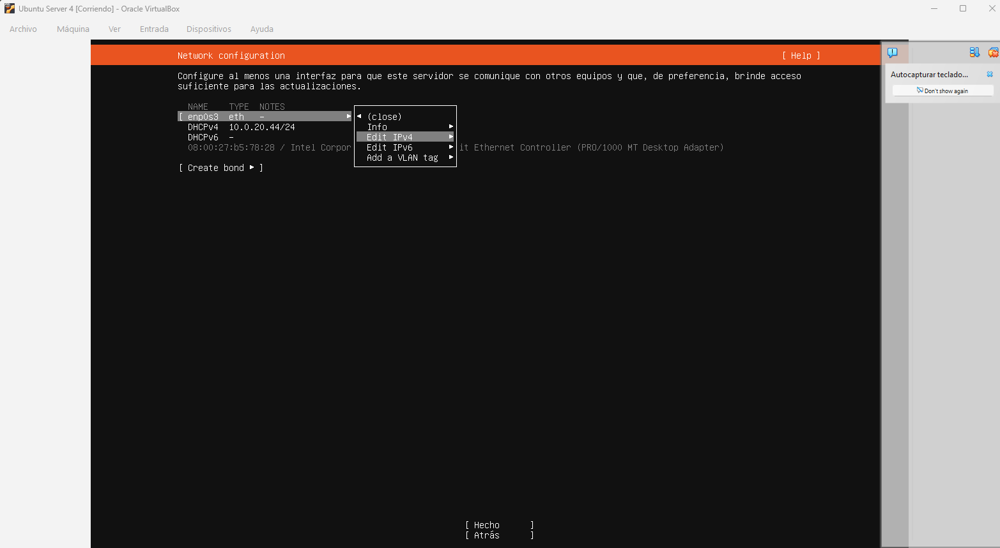
y ponemos la configuración de red de forma manual, aunque usamos la misma que nos ha dado por defecto el DHCP
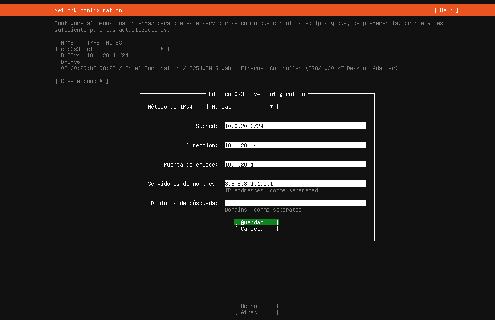
Comprobar que es static aquí después de configurar.
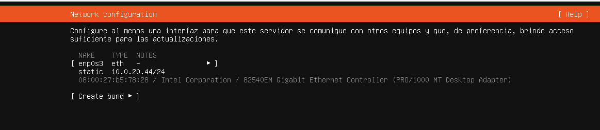
1.1 Cambiar a ip fija un servidor existente.
Los pasos anteriores funcionarán para una instalación limpia, pero si ya tienes un servidor ubuntu con DHCP activo, tendrás que cambiarlo usando el yaml.
1.1.1 Editar el archivo de configuración de Netplan
Normalmente está en:
/etc/netplan/00-installer-config.yaml O algo similar dentro de /etc/netplan/.
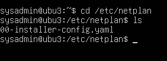
Ábrelo:
sudo nano /etc/netplan/00-installer-config.yaml 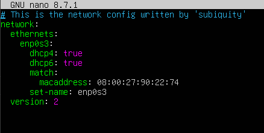
1.1.2 Configurar la IP fija
Ejemplo de configuración estática:
network:
ethernets:
enp0s3:
addresses:
- 10.0.20.44/24
match:
macaddress: 08:00:27:b5:78:28
nameservers:
addresses:
- 8.8.8.8
- 1.1.1.1
search: []
routes:
- to: default
via: 10.0.20.1
set-name: enp0s3
version: 2Cambia ens33 por tu interfaz y ajusta la IP, gateway y DNS a tu red.
1.1.3 Aplicar los cambios
sudo netplan apply Si por alguna razón falla:
sudo netplan try 1.1.4 Verificar que funciona
ping 8.8.8.8 ping google.com Si responde, ya tienes tu IP fija funcionando.
2 Instalación de Docker y Docker Compose
2.1 Instalar actualizaciones
Como siempre, antes de instalar nada actualizamos el sistema:
sudo apt update
sudo apt upgrade -yapt update: actualiza la lista de paquetes disponibles en los repositorios.
apt upgrade: instala las versiones más recientes de los paquetes ya instalados.
Es importante hacerlo antes de instalar Docker para evitar conflictos con dependencias antiguas.
2.2 Instalar paquetes necesarios
sudo apt install -y ca-certificates curl gnupgca-certificates: permite validar certificados HTTPS (sin esto no puedes descargar cosas de forma segura).
curl: herramienta para descargar archivos desde Internet.
gnupg: permite manejar claves GPG (necesarias para verificar que los paquetes de Docker son auténticos).
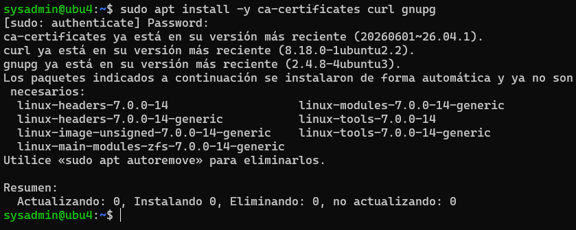
2.3 Crear directorio para la clave GPG de Docker
sudo install -m 0755 -d /etc/apt/keyringsUbuntu ahora recomienda guardar las claves GPG en /etc/apt/keyrings en lugar de /etc/apt/trusted.gpg. Este comando:
Crea el directorio si no existe.
Le da permisos seguros (0755).
2.4 Descargar la clave oficial de Docker
curl -fsSL https://download.docker.com/linux/ubuntu/gpg | \
sudo gpg --dearmor -o /etc/apt/keyrings/docker.gpg Descarga la clave GPG de Docker.
La convierte al formato
.gpg(binario) congpg --dearmor.La guarda en
/etc/apt/keyrings/docker.gpg.
Esta clave sirve para verificar que los paquetes que instales realmente vienen de Docker y no están manipulados.
2.5 Dar permisos a la clave
sudo chmod a+r /etc/apt/keyrings/docker.gpg APT necesita poder leer la clave para validar los paquetes. Sin este permiso, el repositorio no funcionaría.
2.6 Añadir el repositorio oficial de Docker
echo "deb [arch=$(dpkg --print-architecture) signed-by=/etc/apt/keyrings/docker.gpg] https://download.docker.com/linux/ubuntu $(. /etc/os-release && echo "$VERSION_CODENAME") stable" | sudo tee /etc/apt/sources.list.d/docker.list > /dev/nullCrea un archivo llamado /etc/apt/sources.list.d/docker.list
Con el contenido:
deb → indica que es un repositorio de paquetes binarios.
arch=$(dpkg –print-architecture) → detecta si tu sistema es amd64, arm64, etc.
signed-by=… → indica qué clave GPG debe usarse para verificar este repositorio.
VERSION_CODENAME → detecta tu versión de Ubuntu (ej. jammy, focal).
Esto añade el repositorio oficial de Docker, que contiene las versiones más recientes.
2.7 Actualizar repositorios
sudo apt update Ahora que has añadido un repositorio nuevo, apt debe volver a actualizar la lista de paquetes.
2.8 Instalar Docker y Docker Compose
sudo apt install -y docker-ce docker-ce-cli containerd.io docker-buildx-plugin docker-compose-plugin 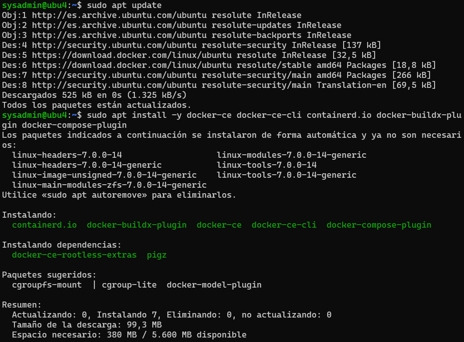
2.8.1 ¿Qué instala cada paquete?
docker-ce → Docker Community Edition (el motor principal).
docker-ce-cli → comandos de Docker (
docker run,docker ps, etc.).containerd.io → el runtime que gestiona los contenedores.
docker-buildx-plugin → herramienta avanzada para construir imágenes.
docker-compose-plugin → versión moderna de Docker Compose (
docker compose).
2.9 Comprobar que Docker funciona
docker --version docker compose version 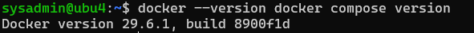
Si ves versiones, todo está bien.
2.10 Probar Docker
sudo docker run hello-world Esto descarga una imagen mínima y la ejecuta. Si funciona, Docker está correctamente instalado.
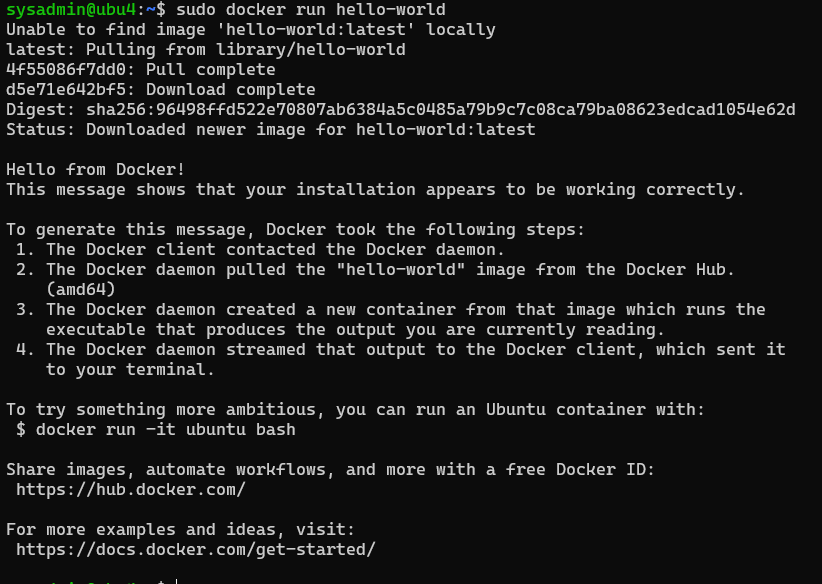
2.11 Usar Docker sin sudo
Añade tu usuario al grupo docker, esto le permitirá ejecutar sin necesidad de usar permisos de superusuario. Docker solo permite ejecutar comandos sin sudo si perteneces a ese grupo. Después debes cerrar sesión y volver a entrar para que el cambio se aplique. (para hacer logout usa exit y luego login para entrar de nuevo)
sudo usermod -aG docker $USER puedes verificar después que estás en el grupo usando groups
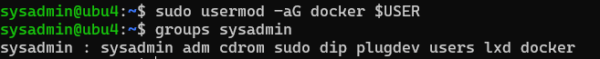
Actualiza Ubuntu.
Instala herramientas necesarias.
Añade la clave GPG de Docker.
Añade el repositorio oficial.
Instala Docker + Compose.
Verifica que funciona.
Te permite usar Docker sin sudo.
Es la forma correcta, segura y recomendada de instalar Docker en Ubuntu.
3 Crear la estructura de trabajo y la configuración de los servicios
Creamos una carpeta (directorio) para la práctica:
mkdir -p ~/grafana-practica/prometheusmkdir→ crea directorios-p→ parents, crea también los directorios padre si no existen
cd ~/grafana-practica3.1 Crear el fichero de configuración de Prometheus
Este fichero le dice a Prometheus qué debe monitorizar y cada cuánto tiempo.
Primero asegúrate de estar en tu carpeta de práctica. Comprobamos dónde estamos con pwd
Crear el fichero
nano prometheus/prometheus.yml Pegar el contenido
global:
scrape_interval: 5s
scrape_configs:
- job_name: "prometheus"
static_configs:
- targets: ["prometheus:9090"]
- job_name: "node"
static_configs:
- targets: ["node-exporter:9100"]global.scrape_interval: 5s : Prometheus recogerá métricas cada 5 segundos.
job_name: “prometheus”: Prometheus también se monitoriza a sí mismo. El target "prometheus:9090" funciona porque en Docker Compose el servicio se llama prometheus, y Docker crea una red interna donde los contenedores se ven por nombre.
job_name: “node” :Este es el trabajo que recoge métricas del servidor Linux.
targets: [“node-exporter:9100”]: Prometheus irá al contenedor llamado node-exporter en el puerto 9100.
Al estar corriendo todos los servicios dentro de docker compose. En Docker, cuando levantas varios contenedores juntos, Docker crea automáticamente una red interna y un servidor DNS propio. Ese DNS permite que el programa encuentre la ip usando nombres como node-exporter o prometheus.
Cuando no tenemos todos los trabajos en docker, tendremos que usar la ip de la máquina en lugar del nombre del servicio, por ejemplo: 10.0.2.11:9100 en lugar de node-exporter:9100.
Guardar el fichero
En nano:
CTRL + O → guardar
ENTER → confirmar
CTRL + X → salir
3.2 Crear el fichero de configuración de docker compose
docker-compose.yml
Este fichero define los tres servicios:
Prometheus
Node Exporter
Grafana
Y cómo deben ejecutarse juntos.
Crear el fichero
Asegúrate de estar en la carpeta correcta cd ~/grafana-practica
nano docker-compose.yml Pegar el contenido
services:
prometheus:
image: prom/prometheus:latest
container_name: prometheus
ports:
- "9090:9090"
volumes:
- ./prometheus/prometheus.yml:/etc/prometheus/prometheus.yml:ro
- prometheus-data:/prometheus
command:
- "--config.file=/etc/prometheus/prometheus.yml"
- "--storage.tsdb.retention.time=15d"
restart: unless-stopped
node-exporter:
image: prom/node-exporter:latest
container_name: node-exporter
ports:
- "9100:9100"
volumes:
- /:/host:ro,rslave
command:
- "--path.rootfs=/host"
restart: unless-stopped
grafana:
image: grafana/grafana:latest
container_name: grafana
ports:
- "3000:3000"
environment:
- GF_SECURITY_ADMIN_USER=admin
- GF_SECURITY_ADMIN_PASSWORD=Admin123*
volumes:
- grafana-data:/var/lib/grafana
restart: unless-stopped
volumes:
prometheus-data:
grafana-data:3.2.1 Explicación del archivo de configuración de docker-compose
Raíz del archivo
services:: Es la sección principal. Aquí dentro defines cada uno de los contenedores que van a formar tu infraestructura (en tu caso: Prometheus, Node Exporter y Grafana).
El Servicio de Prometheus (prometheus:)
image: prom/prometheus:latest: Descarga la imagen oficial de Prometheus desde Docker Hub. El:latestsignifica que siempre usará la versión más reciente disponible.container_name: prometheus: Le asigna un nombre fijo al contenedor dentro de Docker. Gracias a esto, los otros contenedores de este archivo pueden buscarlo en la red usando la palabraprometheus.ports: - "9090:9090": Abre un “túnel” entre tu ordenador real (Host) y el contenedor. El primer número es el puerto de tu máquina real y el segundo es el del contenedor. Gracias a esto, puedes abrir tu navegador en tu ordenador real e ir ahttp://localhost:9090.volumes:: Mapea (conecta) carpetas de tu ordenador con carpetas de dentro del contenedor.- ./prometheus/prometheus.yml:/etc/prometheus/prometheus.yml:ro: Coge el archivo de configuración que tienes en tu carpeta local (./prometheus/...) y se lo mete a Prometheus en su ruta interna. El:rosignifica Read-Only (solo lectura); Prometheus no puede modificar este archivo, solo leerlo.- prometheus-data:/prometheus: Guarda los datos e historial de métricas en un volumen gestionado por Docker (lo veremos al final). Si destruyes el contenedor, tus gráficas e histórico no se pierden.
command:: Sobrescribe las órdenes que ejecuta Prometheus al arrancar por defecto."--config.file=...": Le dice a Prometheus exactamente dónde está su archivo de configuración."--storage.tsdb.retention.time=15d": Muy importante. Le dice a Prometheus que guarde la base de datos de métricas durante un máximo de 15 días. Lo que sea más viejo de 15 días, se borra automáticamente para no llenarte el disco duro.
restart: unless-stopped: Si el contenedor se cae por un error, o si reinicias tu ordenador real, Docker levantará automáticamente este contenedor de nuevo, a menos que tú lo hayas apagado a mano con undocker compose stop.
El Servicio de Node Exporter (node-exporter:)
image: prom/node-exporter:latestycontainer_name: node-exporter: Descarga la imagen oficial y nombra al contenedor comonode-exporter(por eso Prometheus lo puede encontrar por nombre).ports: - "9100:9100": Expone el puerto9100para que puedas ver las métricas en texto plano desde tu navegador si vas ahttp://localhost:9100/metrics.volumes: - /:/host:ro,rslave: Este volumen es un truco de magia. Como un contenedor está aislado y no puede ver el hardware de tu ordenador real, con esta línea le “pasas” toda la raíz de tu sistema operativo (/) a una carpeta interna del contenedor llamada/host. El modo:ro,rslaveasegura que el contenedor solo pueda leer los datos de tu disco duro sin alterarlos ni romper nada del sistema.command: - "--path.rootfs=/host": Le dice a Node Exporter: “Oye, no mires tus propias carpetas internas para medir el uso de disco y CPU; mira en la carpeta/host, porque ese es el ordenador real que quiero monitorizar”.
El Servicio de Grafana (grafana:)
image: grafana/grafana:latestycontainer_name: grafana: Descarga y nombra el contenedor de Grafana (la herramienta para hacer los paneles bonitos).ports: - "3000:3000": Expone el puerto por defecto de Grafana. Para entrar a su interfaz web, usaráshttp://localhost:3000.environment:: Sirve para inyectar variables de entorno dentro del contenedor (configuraciones iniciales).- GF_SECURITY_ADMIN_USER=admin: Define el usuario administrador por defecto.- GF_SECURITY_ADMIN_PASSWORD=Admin123*: Define la contraseña inicial de la cuenta admin (así te saltas el paso de tener que usar la típica contraseña por defectoadmin/admin).
volumes: - grafana-data:/var/lib/grafana: Conecta un volumen de Docker a la carpeta interna donde Grafana guarda los usuarios, contraseñas y, lo más importante, los Dashboards (paneles) que tú diseñes, para que no se borren al apagar el contenedor.
Bloque de Volúmenes (volumes:)
Se encuentra al final del archivo, completamente a la izquierda (raíz).
volumes:: Aquí declaras formalmente los volúmenes virtuales que has usado arriba (prometheus-dataygrafana-data).prometheus-data:ygrafana-data:: Al dejarlos en blanco (solo con los dos puntos), le dices a Docker: “Crea dos carpetas especiales y seguras en el disco duro de mi ordenador real que yo no voy a tocar a mano; tú te encargas de gestionarlas para que los datos de Prometheus y Grafana sobrevivan siempre”.
🔐 Nota importante sobre seguridad en producción
Hasta ahora hemos usado en docker-compose.yml credenciales como:
GF_SECURITY_ADMIN_USER=admin
GF_SECURITY_ADMIN_PASSWORD=Admin123*
Esto está bien para una práctica, pero en producción nunca se deben usar credenciales por defecto ni contraseñas en texto plano dentro del compose. Es un riesgo grave porque:
cualquiera que vea el archivo puede leer la contraseña
si el repositorio se publica, la contraseña queda expuesta
si el servidor tiene varios usuarios, todos pueden verla
las contraseñas en texto plano son un vector de ataque muy común
Por eso, en entornos reales se usan variables de entorno externas o gestores de secretos.
✔️ Alternativa recomendada: archivo .env (seguro y sencillo)
La forma más práctica y segura de gestionar credenciales en Docker es usar un archivo .env que no se sube al repositorio.
1. Crear un archivo .env en la misma carpeta del compose
Contenido del .env:
GF_SECURITY_ADMIN_USER=admin GF_SECURITY_ADMIN_PASSWORD=MiPasswordSegura123! Este archivo no se publica y solo existe en el servidor donde se despliega.
2. Modificar el docker-compose.yml para usar variables
environment:
- GF_SECURITY_ADMIN_USER
- GF_SECURITY_ADMIN_PASSWORDDocker sustituirá automáticamente las variables por los valores del .env.
3. Asegurarse de que .env no se sube a GitHub
En tu .gitignore añade:
.env Con esto, aunque publiques tu proyecto, las credenciales nunca salen del servidor.
✔️ Alternativa 2: variables de entorno del sistema
En el servidor:
export GF_SECURITY_ADMIN_USER=admin export GF_SECURITY_ADMIN_PASSWORD=$(openssl rand -base64 32) Y en el compose:
environment:
- GF_SECURITY_ADMIN_USER
- GF_SECURITY_ADMIN_PASSWORDDocker toma las variables directamente del entorno del sistema.
✔️ Alternativa 3: gestores de secretos (producción real)
En entornos profesionales como Azure, AWS o Kubernetes se usan:
Azure Key Vault
AWS Secrets Manager
HashiCorp Vault
Docker Swarm Secrets
Kubernetes Secrets
Ejemplo con Docker Swarm:
docker secret create grafana_admin_password password.txt Y en el compose:
secrets:
- grafana_admin_passwordLa contraseña nunca aparece en texto plano.
Resumen
En producción nunca se deben usar credenciales por defecto ni contraseñas dentro del docker-compose. La alternativa correcta es usar variables de entorno externas, preferiblemente en un archivo
.envque no se sube al repositorio. En entornos avanzados se usan gestores de secretos como Azure Key Vault o Docker Swarm Secrets.
3.2.2 Contenedores que estamos configurando en este archivo:
3.2.3 Prometheus
Usa la imagen oficial
prom/prometheus.Expone el puerto 9090 para acceder a la interfaz web.
Monta tu fichero
prometheus.ymldentro del contenedor.Guarda los datos en un volumen persistente
prometheus-data.Retiene datos durante 15 días.
3.2.4 Node Exporter
Es el agente de monitorización del servidor
Expone el puerto 9100.
Monta
/del host en modo lectura para poder leer métricas del sistema.Docker lo aísla, pero con
--path.rootfs=/hostpuede acceder a la información del host.
3.2.5 Grafana
Usa la imagen oficial
grafana/grafana.Expone el puerto 3000.
Usuario y contraseña inicial:
admin
Admin123*
Guarda dashboards y configuración en
grafana-data.
4 Levantar todo el stack
Desde la carpeta ~/grafana-practica:
docker compose up -d Docker Compose realiza tres tareas fundamentales:
4.1 Descarga las imágenes necesarias (si no existen en el sistema)
image: prom/prometheus:latest
image: grafana/grafana:latest
image: prom/node-exporter:latestSi estas imágenes no están ya en tu máquina, Docker las descarga automáticamente desde Docker Hub. Esto sustituye completamente la instalación manual de Prometheus, Grafana o Node Exporter en Ubuntu. No instalamos nada en el sistema operativo, todo viene dentro de las imágenes.
4.2 Crea los contenedores a partir de esas imágenes
Cada servicio del YAML se convierte en un contenedor:
prometheus→ contenedor Prometheusgrafana→ contenedor Grafananode-exporter→ contenedor Node Exporter
Cada uno es un entorno aislado, con su propio filesystem, su propio proceso y su propia configuración.
4.3 Configura redes, puertos y volúmenes automáticamente
Esto es clave: los contenedores se comunican entre sí por nombre, no por IP.
Ejemplos:
ports: "3000:3000"→ expone Grafana al exteriorvolumes:→ monta configuraciones persistentescommand:→ pasa parámetros a Prometheus o Node Exporterred interna de Docker → permite que Grafana acceda a Prometheus usando
http://prometheus:9090
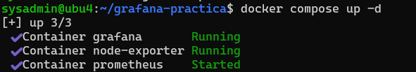
4.4 Verificar que funciona
4.4.1 Contenedores
Comprobar los logs del contenedor: docker compose logs -f y CTRL + C para salir
4.4.2 Prometheus:
http://{TU_IP}:9090 por ejemplo http://10.0.20.44:9090/
Si estamos dentro de la propia máquina: http://localhost:9090
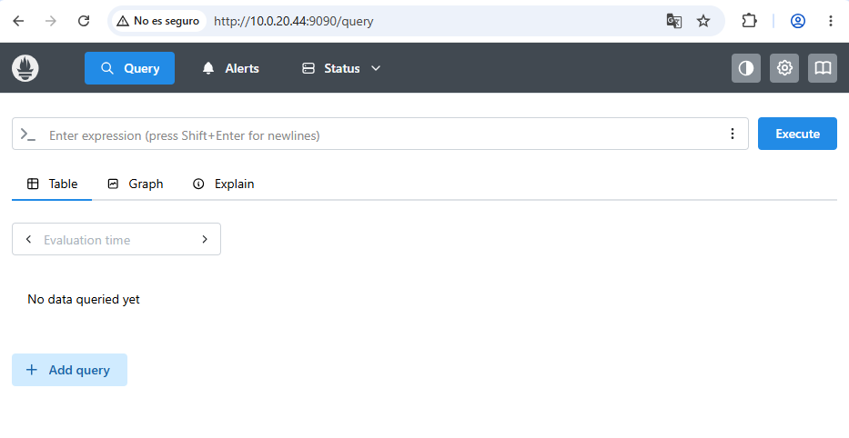
Entramos en: Status > Target health
O directamente: http://{IP_DEL_SERVIDOR}:9090/targets
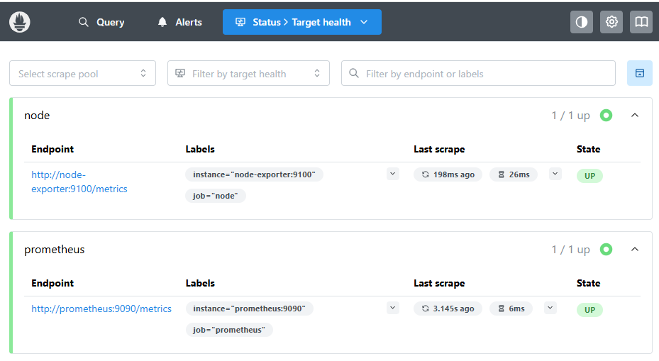
4.4.2.1 Hacer una primera consulta en Prometheus
En Prometheus, vamos a la pestaña de consulta y probamos: up
Pulsamos Execute.
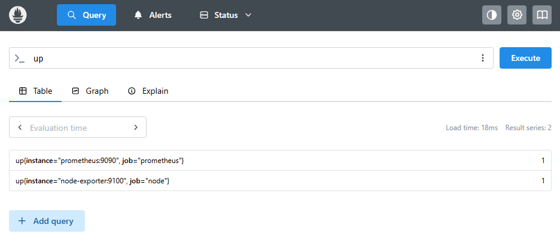
Interpretación:
1 = el servicio está accesible
0 = el servicio no está accesible
Probamos ahora: node_memory_MemTotal_bytes
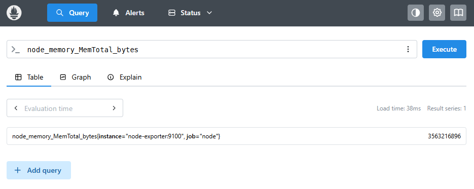
Y después: node_cpu_seconds_total
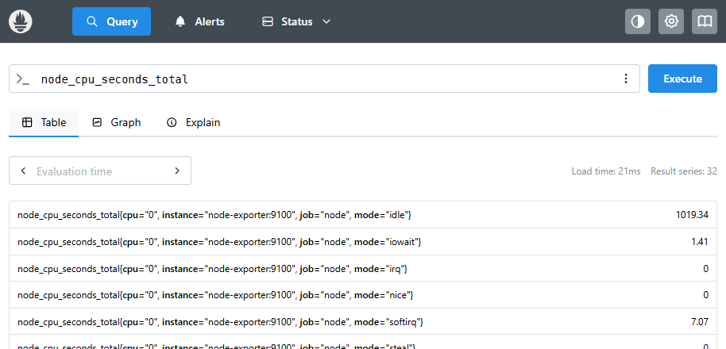
Estas métricas serán las que luego usaremos en Grafana.
4.4.3 Node Exporter:
http://{TU_IP}:9100/metrics
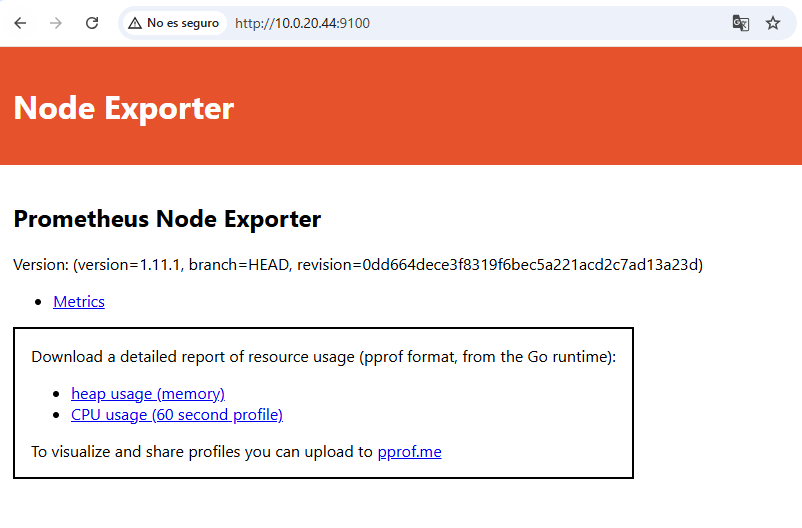
Node Exporter debería estar exponiendo métricas en el puerto 9100.
Ejecutamos: curl http://localhost:9100/metrics | head
Si queremos ver solo métricas relacionadas con el sistema: curl http://localhost:9100/metrics | grep node_cpu | head
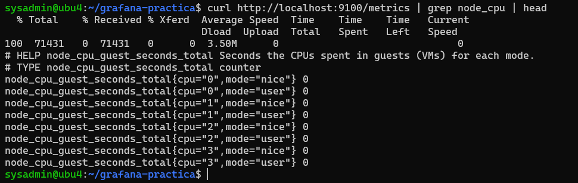
4.4.4 Grafana:
http://{TU_IP}:3000 Usuario: admin Contraseña: Admin123*
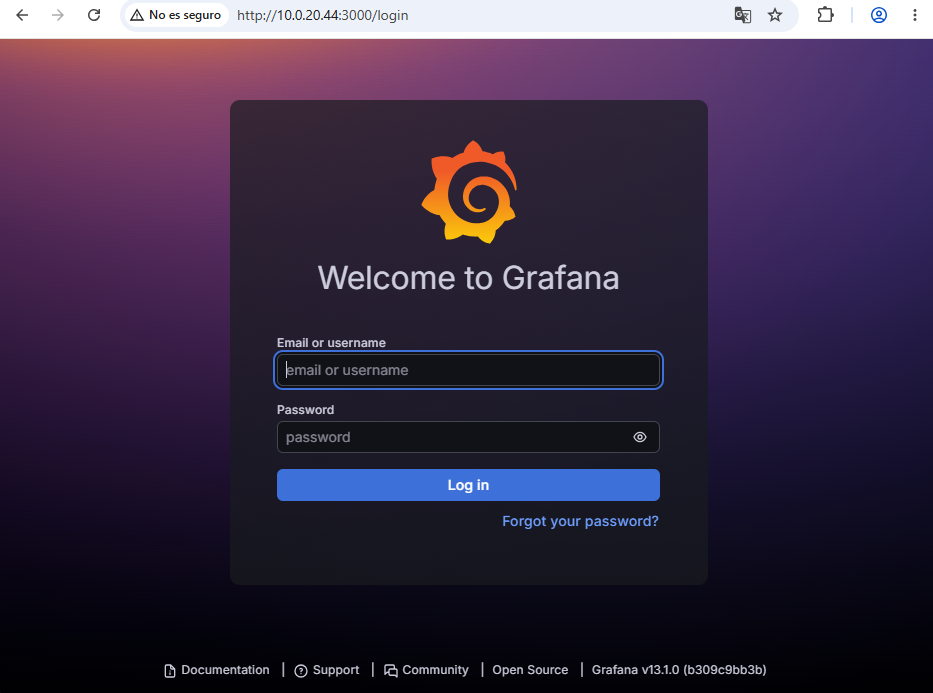
5 Trabajar en Grafana
Grafana puede pedir cambiar la contraseña. Para la práctica podemos cambiarla por otra sencilla o saltar el cambio si nos lo permite.
5.1 Añadir Prometheus como fuente de datos en Grafana
Dentro de Grafana: Connections / Data sources -> Add data source -> Prometheus
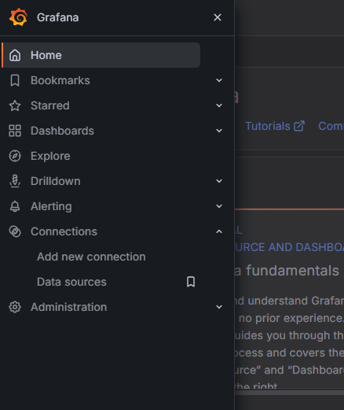
Importante: dentro de Docker no usamos localhost:9090 como aparece por defecto, porque localhost sería la máquina desde donde nos estamos conectando mediante el navegador web. Docker Compose crea una red interna donde cada servicio se resuelve por su nombre. Usamos el nombre del servicio Docker: (prometheus)
En la URL ponemos: http://prometheus:9090
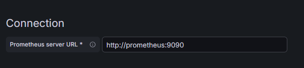
Pulsamos: Save & test
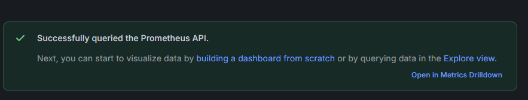
5.2 Crear nuestro primer dashboard manual
5.2.1 Añadir una visualización nueva
Entramos en: Dashboards > New > New dashboard > Add visualization
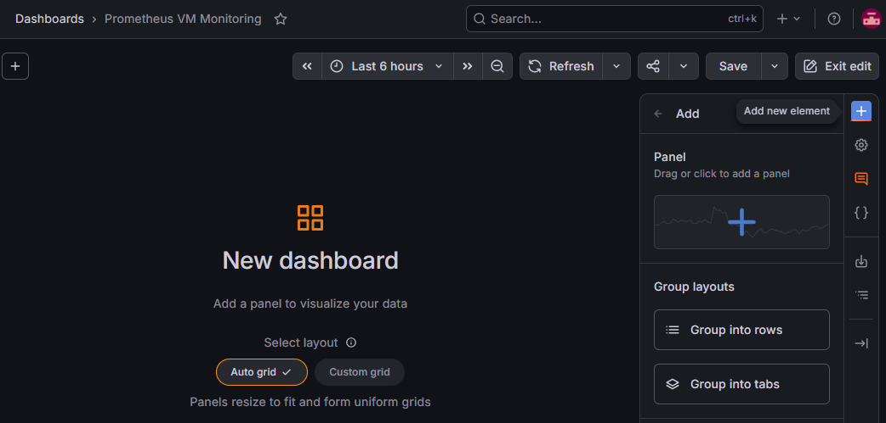
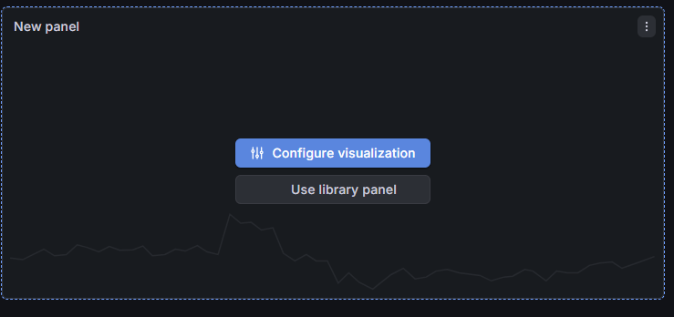
5.2.1.1 Seleccionamos la fuente de datos:
Prometheus
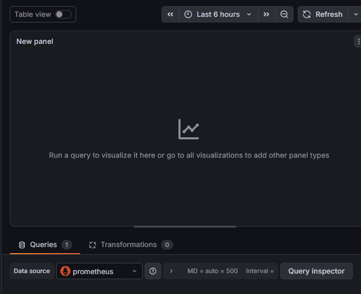
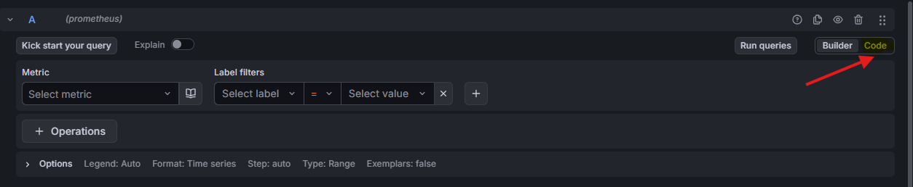
Tipo de visualización recomendado para todos los graficos: Time series
En todas las métricas daremos una ventana de tiempo para los intervalos de tiempo a mostrar:
La ventana [1m] suaviza picos y evita que las métricas fluctúen demasiado. Se pueden usar intervalos menores si se desea [5s] o [30s]. Prometheus no está calculando una media de los valores durante 1 minuto. Está calculando la velocidad de cambio por segundo, usando todos los puntos de datos recogidos en ese minuto. Es decir: Prometheus mira cómo ha cambiado la métrica en los últimos 60 segundos y calcula la pendiente (slope) de esa serie.
5.2.2 Ejemplo sencillo con 5 mediciones y un pico
Vamos a imaginar una métrica de CPU idle (porcentaje de tiempo que la CPU está “sin hacer nada”) medida cada 15 segundos durante 1 minuto:
Tiempo total: 60 segundos
5 puntos: t0,t15,t30,t45,t60
Supongamos estos valores de idle%:
| Instante | Idle (%) |
|---|---|
| t0 | 90 |
| t15 | 90 |
| t30 | 10 ← pico de actividad (CPU casi ocupada) |
| t45 | 90 |
| t60 | 90 |
5.2.3 1. Media simple de los valores
Calculamos la media aritmética:
media=90+90+10+90+905=3705=74
Idle medio: 74%
Uso medio de CPU: 100−74=26%
La media “se come” el pico y lo reparte por todo el minuto.
5.2.4 2. Qué hace rate() bajo el capó (versión conceptual)
En realidad, rate(node_cpu_seconds_total{mode="idle"}[1m]) no trabaja con porcentajes, sino con un contador de segundos idle. Simplifiquemos con un ejemplo equivalente:
Supongamos que el contador de segundos idle (node_cpu_seconds_total{mode="idle"}) tiene estos valores:
| Instante | Idle seconds (contador) |
|---|---|
| t0 | 0 |
| t15 | 13.5 |
| t30 | 14.0 |
| t45 | 27.5 |
| t60 | 41.0 |
Interpretación:
Entre t0 y t15: la CPU ha estado idle el 90% del tiempo → 13.5 s
Entre t15 y t30: idle baja mucho (pico de actividad) → solo 0.5 s más
Entre t30 y t45: vuelve a estar muy idle → suma 13.5 s
Entre t45 y t60: otra vez muy idle → suma 13.5 s
rate() hace, conceptualmente, esto:
Mira todos los puntos en la ventana
[1m].Ajusta una recta (regresión lineal) al contador.
Calcula la pendiente de esa recta → segundos idle por segundo.
Podemos aproximar la pendiente usando el primer y último punto:
pendiente≈41.0−060=4160≈0.6833
Eso significa:
Idle rate: 0.6833 segundos idle por segundo → 68.33% idle
Uso de CPU: 100−68.33≈31.67%
5.2.5 3. Comparación media vs rate() en tabla
| Método | Qué hace | Resultado idle | Resultado uso CPU |
|---|---|---|---|
| Media simple | Promedia los 5 valores de idle% | 74% | 26% |
rate() + 1m |
Calcula la pendiente del contador en 60 s | ≈68.33% | ≈31.67% |
5.2.6 Idea clave
La media trata el pico como un valor más y lo reparte uniformemente.
rate()mira cómo ha evolucionado el contador en todo el minuto y devuelve una tendencia (derivada), que refleja mejor el comportamiento global, sin reaccionar de forma exagerada a un solo punto.
5.2.6.1 Panel 1: Uso de CPU (%)
Consulta PromQL: 100 - (avg by (instance) (rate(node_cpu_seconds_total{mode="idle"}[1m])) * 100)
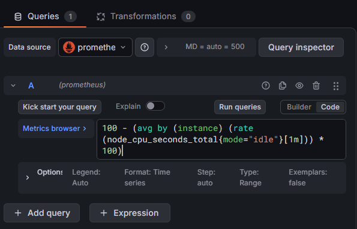
Unidad: Percent (0-100)
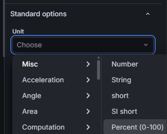
5.2.6.1.1 Explicación de la métrica:
node_cpu_seconds_total{mode="idle"}
Esta métrica mide cuántos segundos de CPU ha pasado el sistema en estado idle (sin hacer nada).
rate(...[1m])
rate() calcula la velocidad de cambio por segundo en los últimos 1 minuto. En este caso: Qué porcentaje del tiempo reciente la CPU ha estado idle.
avg by (instance)(...)Prometheus tiene varios cores por instancia. Este avg calcula el promedio de idle entre todos los cores de la máquina.
Multiplicación por 100: Convierte el valor en porcentaje: idle% = avg(rate(idle)) * 100
100 - idle%Si restas el porcentaje de idle a 100 obtienes: CPU usada (%)
Ejemplo: Si la CPU está idle un 20% → 100 - 20 = 80% de uso.
Por qué se usa el modo idle en lugar de user, system, etc.
Porque:
La suma de todos los modos (user, system, iowait, idle…) es 100%.
Idle es el más fácil de interpretar.
Si sabes cuánto está idle, sabes cuánto está ocupada.
Es la forma más robusta de medir uso real de CPU.
La fórmula calcula el porcentaje de CPU usada restando el porcentaje de tiempo idle al 100%. Usa rate() para medir actividad reciente y avg para promediar todos los cores de la instancia.
5.2.6.2 Panel 2: Uso de memoria RAM (%)
Consulta: 100 * (1 - (node_memory_MemAvailable_bytes / node_memory_MemTotal_bytes))
Unidad: Percent (0-100)
Interpretación: Muestra qué porcentaje de RAM está en uso. MemAvailable es la métrica recomendada por el kernel para medir memoria realmente libre, porque incluye caché y buffers reutilizables.
5.2.6.3 Panel 3: Uso de disco raíz (%)
Consulta: 100 * (1 - (node_filesystem_avail_bytes{mountpoint="/",fstype!~"tmpfs|overlay|squashfs"}/node_filesystem_size_bytes{mountpoint="/",fstype!~"tmpfs|overlay|squashfs"}))
Explicación: node_filesystem_avail_bytesEs el espacio disponible (libre) en bytes. node_filesystem_size_bytesEs el tamaño total del filesystem.mountpoint="/"esto especifica el disco raíz.
Esto excluye los ficheros temporales o virtuales porque no representan almacenamiento real en el disco:
fstype!~"tmpfs|overlay|squashfs"Unidad:Percent (0-100):
Interpretación: Muestra cuánto espacio se está usando en la partición principal.
5.2.6.4 Panel 4: tráfico de red recibido
Consulta: rate(node_network_receive_bytes_total{device!="lo"}[1m])
Unidad: bytes/sec
5.2.6.5 Panel 5: Tráfico de red enviado
Consulta: rate(node_network_transmit_bytes_total{device!="lo"}[1m])
Unidad: bytes/sec
5.2.6.6 Panel 6: Escritura en disco (B/s)
Consulta: sum by (instance) ( rate(node_disk_written_bytes_total{device!~"loop.*|ram.*"}[1m]) )
Tipo de visualización: Time series
Unidad: bytes/sec
5.2.6.7 Resultado esperado
Este panel debería mostrar picos cuando el sistema escriba datos en disco. Por ejemplo, al crear un fichero grande, instalar paquetes o realizar operaciones intensivas de escritura.
5.2.6.8 Panel 7: Lectura en disco (B/s)
Consulta: sum by (instance) ( rate(node_disk_read_bytes_total{device!~"loop.*|ram.*"}[1m]) )
Tipo de visualización: Time series
Unidad: bytes/sec
5.2.6.9 Resultado esperado
Este panel debería mostrar picos cuando el sistema lea datos del disco. Por ejemplo, al abrir ficheros grandes, cargar datos o leer información desde una base de datos.
5.2.6.10 Guardar el dashboard
Monitorización básica del servidor Ubuntu
Descripción: Dashboard básico para visualizar CPU, memoria, disco y red mediante Grafana, Prometheus y Node Exporter.
5.2.7 Generar carga para ver cambios en el dashboard
Ahora vamos a provocar algo de actividad para que el dashboard lo muestre
Generamos carga de CPU durante 60 segundos:
timeout 60s bash -c 'while true; do true; done' &timeout 60s bash -c 'while true; do true; done' &wait
Esto genera carga de CPU durante 60 segundos usando dos procesos.
Volvemos a Grafana y observamos el panel de CPU.
Ahora generamos algo de uso de disco:
dd if=/dev/zero of=/tmp/prueba-grafana.dat bs=1M count=512 oflag=direct
Eliminamos el fichero:
rm /tmp/prueba-grafana.dat
Ahora vamos a provocar actividad de escritura para comprobar que el panel funciona.
Ejecutamos:
sudo dd if=/dev/zero of=/tmp/prueba-escritura.img bs=1M count=2048 status=progress conv=fsync
Una vez creado el fichero anterior, vamos a leerlo para comprobar el panel de lectura.
Ejecutamos:
sudo dd if=/tmp/prueba-escritura.img of=/dev/null bs=1M status=progress iflag=direct
Limpiar la prueba
Cuando terminemos, eliminamos el fichero de prueba:
sudo rm /tmp/prueba-escritura.img
5.2.8 Preguntas para responder:
1. ¿Qué panel ha cambiado al ejecutar stress-ng?
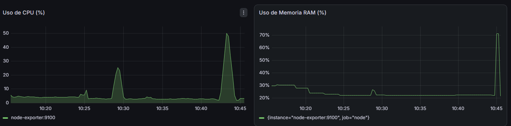
2. ¿Qué métrica permite ver el uso de CPU? node_cpu_seconds_total
3. ¿Qué diferencia hay entre ver la información en Prometheus y verla en Grafana? grafana permite crear graficas
4. ¿Qué ventaja tiene guardar un dashboard? poder agrupar metricas similares y monitorizar actividad relacionada
5. ¿Qué problemas podríamos detectar antes de que el usuario final se queje? creando alertas podemos saber cuando un recurso esta bajo presión
5.3 Importar un dashboard ya preparado
Además del dashboard manual, podemos importar un dashboard ya creado por la comunidad.
En Grafana: Dashboards >New> Import
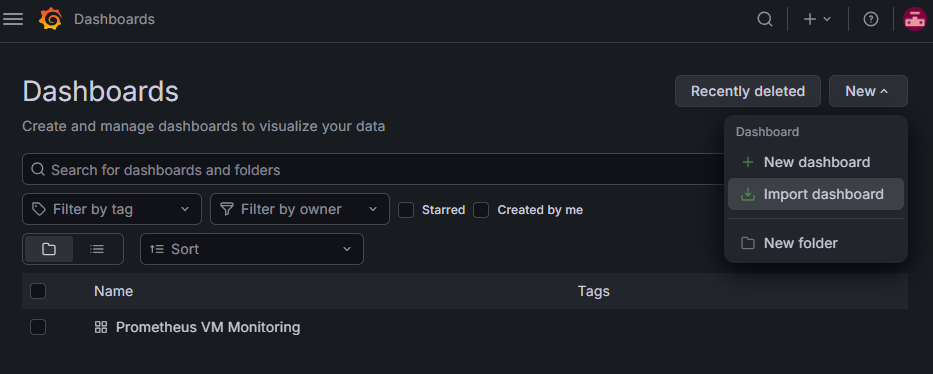
En el campo de ID ponemos: 1860
Ese dashboard corresponde a Node Exporter Full, preparado para mostrar muchas métricas de Linux usando Prometheus Node Exporter. La propia página del dashboard indica que usa el job_name: node, por eso en esta práctica hemos llamado node al trabajo de Prometheus. (Grafana Labs)
Es posible que algunos paneles aparezcan vacíos si esperan métricas avanzadas no activadas. No pasa nada: para esta práctica lo importante es entender el flujo de monitorización.
6 Comprobaciones finales
6.1 Estado de los contenedores
Ejecutamos: docker compose ps
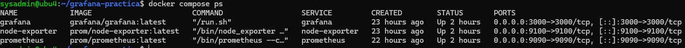
6.2 Puertos
Comprobamos los puertos: ss -tulnp | grep -E "3000|9090|9100"
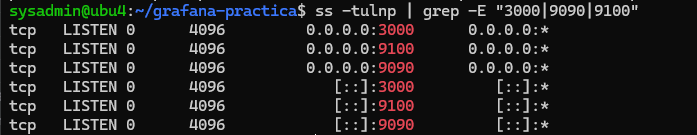
Deberíamos ver:
3000 → Grafana
9090 → Prometheus
9100 → Node Exporter
6.3 Métricas Node Exporter
Comprobamos métricas: curl http://localhost:9100/metrics | grep node_memory | headEste comando está consultando las métricas de memoria que expone Node Exporter en el endpoint /metrics, y luego filtrando solo las que empiezan por node_memory_.
head hará que sólo se muestren las 10 primeras filas de información.
Lo que dará es información detallada del estado de la memoria RAM de tu máquina, desglosada en diferentes categorías internas del kernel de Linux.
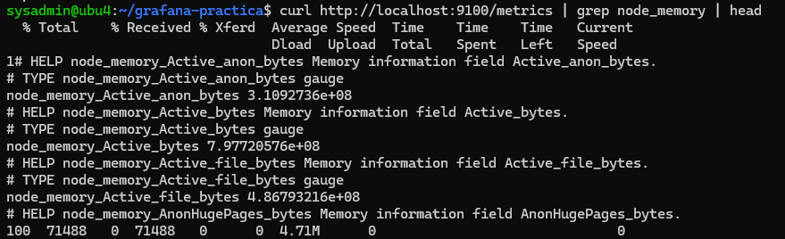
Explicación del output
1. # HELP node_memory_Active_anon_bytes
Descripción de la métrica Prometheus siempre incluye una línea
HELPexplicando qué es la métrica.
2. # TYPE node_memory_Active_anon_bytes gauge
Tipo de métrica Es un gauge, es decir, un valor que sube y baja (no es un contador).
3. node_memory_Active_anon_bytes 3.1092736e+08
Valor actual de la métrica Aquí tienes el valor en bytes:
3.1092736e+08≈ 310 MB
¿Qué significa Active_anon_bytes?
Active = páginas de memoria que el kernel considera “activas”, es decir, que se han usado recientemente y no se pueden descartar.
anon = anonymous memory, memoria que no pertenece a ningún archivo (por ejemplo, variables de procesos, heap, stack).
En resumen: Memoria activa usada por procesos (no asociada a archivos).
4. node_memory_Active_bytes 7.97720576e+08
Memoria activa total que el sistema está usando y no puede liberar. Esto incluye toda la memoria activa, tanto:
anónima (
Active_anon)de archivos (
Active_file)
5. node_memory_Active_file_bytes 4.86793216e+08Esto es la parte de la memoria activa que sí está asociada a archivos, por ejemplo:
binarios cargados
bibliotecas dinámicas
páginas de archivos que se han usado recientemente
6. node_memory_AnonHugePages_bytesAquí empieza la siguiente métrica, pero tu head corta justo después.
6.4 Comprobamos Prometheus:
En un navegador: http://{IP_DEL_SERVIDOR}:9090/targets
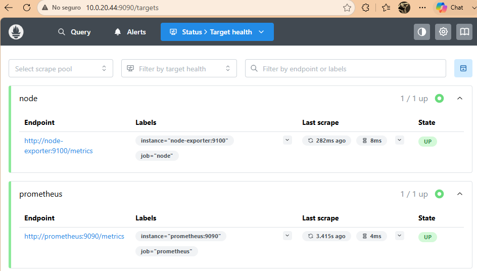
6.5 Comprobamos Grafana
En un navegador: http://IP_DEL_SERVIDOR:3000
7 Entregables de la práctica
Preguntas de reflexión
1. ¿Qué función cumple Grafana? Grafana es la herramienta que visualiza las métricas. Permite crear dashboards, gráficas, paneles y alertas para interpretar los datos que recoge Prometheus.
2. ¿Qué función cumple Prometheus? Prometheus es el sistema que recoge, almacena y consulta las métricas. Lee los endpoints de Node Explorer, guarda las series temporales y permite hacer consultas PromQL
3. ¿Qué función cumple Node Exporter? Node Exporter es el sistema que métricas del sistema operativo en /metrics
4. ¿Por qué Grafana necesita una fuente de datos? Porque Grafana no almacena métricas. Solo las visualiza. Necesita conectarse a Prometheus para obtener los datos que mostrará en los paneles.
5. ¿Qué significa que un target esté en estado UP? Significa que Prometheus puede acceder al endpoint del target y está recibiendo métricas correctamente.
6. ¿Qué métrica usaríamos para detectar falta de memoria?
node_memory_MemAvailable_bytes7. ¿Qué métrica usaríamos para detectar falta de espacio en disco? Las métricas del filesystem:
node_filesystem_avail_bytes→ espacio librenode_filesystem_size_bytes→ tamaño total
8. ¿Qué ventaja tiene observar tendencias en lugar de mirar solo el estado actual? Observar tendencias permite:
detectar problemas antes de que ocurran
ver si un recurso se está agotando progresivamente
anticipar fallos (disco llenándose, RAM consumiéndose, CPU saturándose)
9. ¿Por qué sería útil este sistema en un servidor de bases de datos? Porque un servidor de bases de datos depende críticamente de:
CPU
RAM
disco (lectura/escritura)
red
Monitorizar estos recursos permite:
detectar cuellos de botella
anticipar saturación
evitar caídas
mantener el rendimiento de consultas
reaccionar antes de que los usuarios sufran lentitud
Es exactamente el tipo de servidor donde Prometheus + Grafana + Node Exporter es más útil.
8 Problemas frecuentes
8.1 Grafana no abre
Comprobar que el contenedor está activo: docker compose ps
Comprobar logs: docker compose logs grafana
Comprobar puerto: ss -tulnp | grep 3000
8.2 Prometheus no muestra el target node en UP
Revisar el fichero: cat prometheus/prometheus.yml
Debe aparecer:
- job_name: “node”
static_configs:
- targets: [“node-exporter:9100”]
Reiniciar:
docker compose restart prometheus
8.3 Grafana no conecta con Prometheus
La URL correcta dentro de Grafana es: http://prometheus:9090 No usar: http://localhost:9090
8.4 En VirtualBox no puedo acceder desde el equipo anfitrión
Opciones:
1. Usar Adaptador Puente en la VM.
2. Usar red NAT con redirección de puertos.
3. Abrir Grafana desde el navegador dentro de la propia VM, si tiene entorno gráfico.
9 Parar o eliminar la práctica
Para parar los contenedores: docker compose stop
Para volver a arrancarlos: docker compose start
Para eliminarlos sin borrar los datos: docker compose down
Para eliminar contenedores y datos persistentes: docker compose down -v